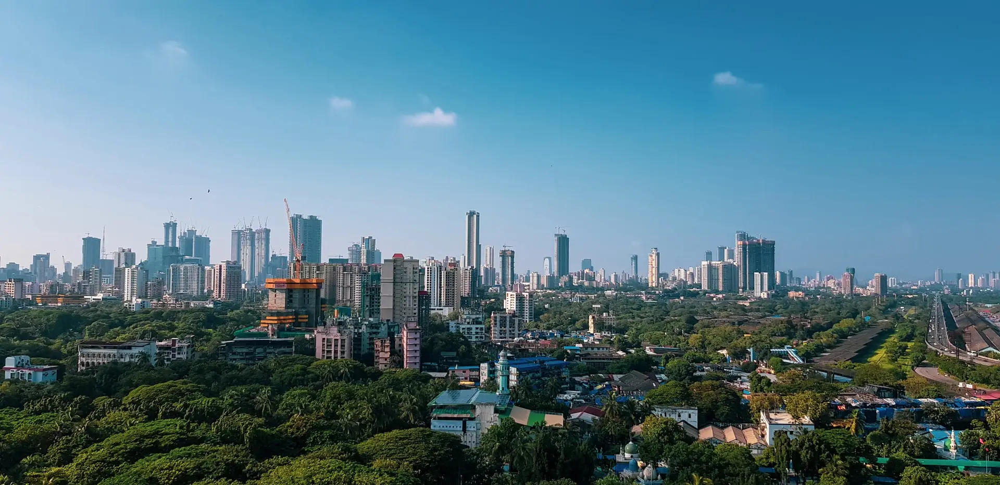
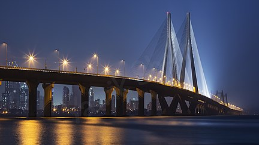
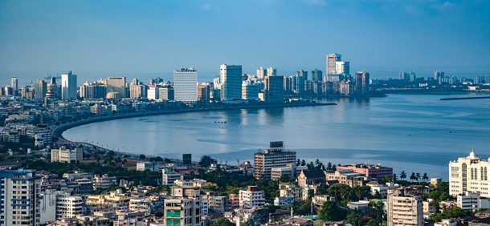
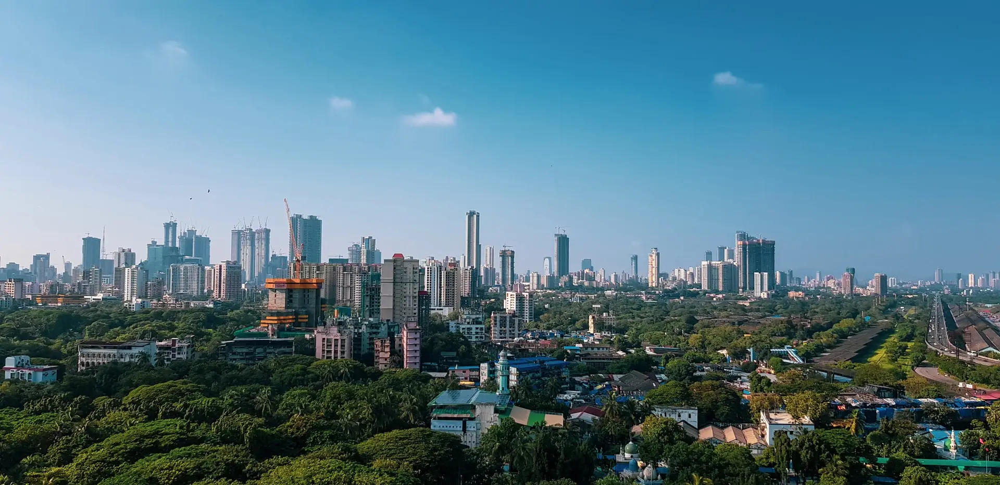
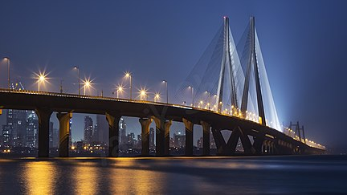
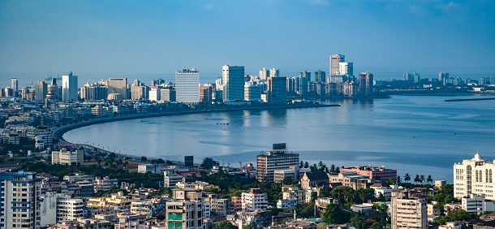
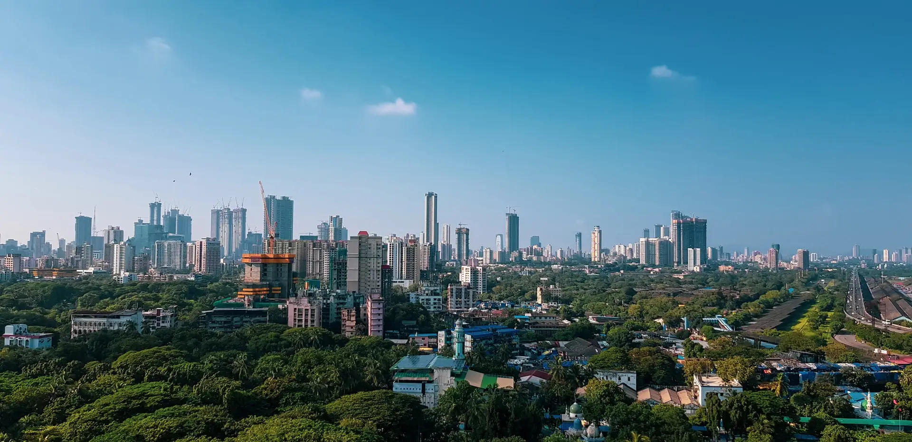
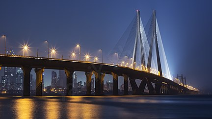
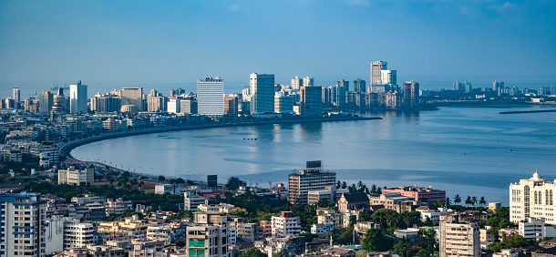

Also known as Bombay, Mumbai is the capital city of Maharashtra. Mumbai is synonymous with Mayanagri or the 'City of Dreams' not just for the people of India, but for many well beyond the billion strong country's borders. Mumbai has much appeal to anyone in search of work and better career prospects. It is known for its energetic vibe and is known as the 'city that never sleeps'. It is a capital city in many ways:


